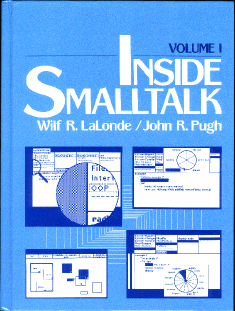
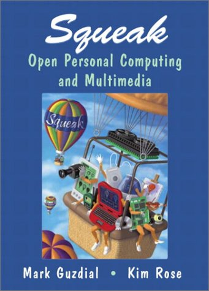
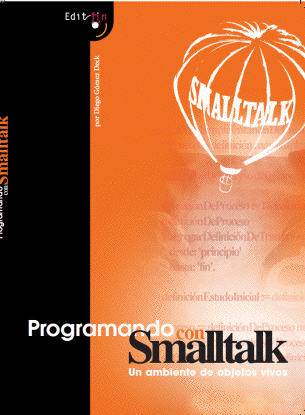

Some years ago, I started to be fed up to see all the books I like to be out of print, so I started to contact authors and collected their old books. I would like to thanks them all and their publishers as well. If you
know an author that is willing to give to the community a book, please give him my email.
You can also support me.
You can find a lot more recent and free books (Spec, Pharo by Example Updated, Pharo with Style, Learning OOD with TDD, and many more) at
and each project has an automatic build with the latest PDF version.
If you have more books and you want to get them archived and listed here please contact me.

|
Dynamic Web Development with Seaside
Stephane Ducasse, Lukas Renggli, David C. Shaffer and Rick Zaccone. Square Bracket Associates, 2009.
This book is made available under the Creative Commons Attribution-ShareAlike 3.0 license. You can buy a softcover copy from Lulu.
|

|
Andrew P. Black, Stéphane Ducasse, Oscar Nierstrasz, Damien Pollet with Damien Cassou and Marcus Denker. Square Bracket Associates, 2009.
Pay attention there is also Pharo by Example Updated (for Pharo 50) and we are working on Pharo by Example for Pharo 80.
This book is made available under the Creative Commons Attribution-ShareAlike 3.0 license. You will be able to buy a softcover copy from
|

|
Canol Gokel, free e-book. 2009.
.
|

|
Andrew P. Black, Stéphane Ducasse, Oscar Nierstrasz and Damien Pollet. Square Bracket Associates, 2007.
Watch out this book is old. Better read
|

|
Smalltalk design pattern companion book drafts
Sherman Alpert, Kyle Brown, and Bobby Woolf. Addison-Wesley, 978-02011846241998.
The chapters listed here are not in their final form but more in draft form. Buy the book it is really excellent.
|

|
Smalltalk by Example: the Developer's Guide Alex Sharp, McGraw Hill Text; ISBN: 0079130364, 1997.
This book covers all kinds of issues basic level, design, testing... I liked it a lot. The code and the book as a single file containing everything are available. Thank again
Lukas Renggli for his effort for converting everything from Word. Thanks a lot Alec and thanks McGraw-Hill.
|

|
Smalltalk With Style by Edward Klimas, Suzanne Skublics and David A. Thomas.
ISBN: 0-13-165549-3, Publisher: Prentice Hall, Copyright: 1996. A great and small book that everybody should read. Thanks Ed, Suzanne and Dave to give it for free.
|
|

|
(Volume One) ]
by LaLonde, Wilf R. and Pugh, John R., Prentice-Hall, 1990, ISBN 0-13-468414-1.
|

|
by LaLonde, Wilf R. and Pugh, John R., Prentice-Hall, 1990, ISBN 0-13-468414-1.
|

|
by Tim Budd, Addison-Wesley 1987.
Many thanks to Tim Budd and his publisher.
|

|
The Art and Science of Smalltalk by Simon Lewis, Prentice-Hall 1995-1999.
Many thanks to the original publishers of this book at Prentice-Hall, the responsible of the HP series, and Simon Lewis.
|

|
Practical Smalltalk: Using Smalltalk/V by Dan Shafer and Dean A. Ritz, Springer Verlag; (July 1991).
Many thanks to the original publishers of this book Springer Verlag, and Dan. Thanks.
|

|
Trevor Hopkins and Bernard Horan, Pearson Education, 1995. The answers of the exercises are at ftp://st.cs.uiuc.edu/pub/Smalltalk/books/Book_Answers.tar.gz
Many thanks to the original publishers of this book, Pearson Education, for permission to distribute this work, and of course the authors!
|

|
Springer-Verlag, ISBN 3-540-76115-2, 1997.
This book provides a good survey of Smalltalk. Some information are now obsolete
but it is still worth reading. Enjoy it. Thanks John to support our request. We want to thank Springer Verlag Publishing
for allowing us to give you this book for free.
|

|
|

|
Ted Kaehler and Dave Patterson, W W Norton Co.; ISBN: 0393955052; (May 1986).
This book is for collectors. The quotes are really excellent.
All the chapters are ready (except chap.2 for now)
Enjoy it. (Scanned ... by Stef, Alex, Gabriela, and Lukas).
Thanks Ted.
|

|
Ivan
Tomek (September 2000). 700 pages
Ivan wrote this book and he gave it to the community. It contains a lot of useful material.
Thanks again ivan and continue to write good books.
|
|
http://books.iuniverse.com/viewbooks.asp?isbn=1583484906&page=fm1">Smalltalk,objects and design
Liu, iUniverse books
|
-->

|
Smalltalk-80, Bits of History, Words of Advice
By Glen Krasner, Editor. ISBN 0-201-11669-3. 344 pp. 1983
This book is for collectors. Thanks Glenn.
|

|
Smalltalk-80: The Language and its Implementation
By Adele Goldberg and DavidRobson; Xerox Palo Alto Research Center ISBN 0-201-11371-6. 344 pp. 1983
|

|
Smalltalk-80, The Interactive Programming Environment
By Adele Goldberg. ISBN 0201113724. 560 pp. 1983
This book is for collectors. Thanks Adele.
|
|

|
DRAFTS of Squeak, Open Personal Computing and Multimedia
Mirror of
http://coweb.cc.gatech.edu/squeakbook/">http://coweb.cc.gatech.edu/squeakbook/
Edited by Mark Guzdial and Kim Rose. Prentice-Hall 2000.
|

|
taken from
Mark Guzdial, Prentice-Hall 2000. It's available from Prentice-Hall.
|

|
Programmierwerkzeuge ]
L. Schmitz, B.G. Teubner Stuttgart 1995.
- .
This book presents compilation techniques in german.
Lothar Schmitz is still developing a free visual compiler-compiler
(SIC and JACCIE).
|

|
Einfuehrung in die objekt-orientierte Programmierung ]
Peter P. Bothner, Wolf-Michael Kaehler 1999.
- .
This book presents object-oriented programming in german with VisualWorks.
|
|
|
Bjoern Eiderbaeck, Per Haegglund, and Olle Baelter
Thanks Bjoern Eiderbaeck.
|
|

|
Diego Gomez Deck
Thanks Diego. This book is distributed under the Creative Commons license.
|
I added some articles because they illustrate the philosophy behind Smalltalk.
-->